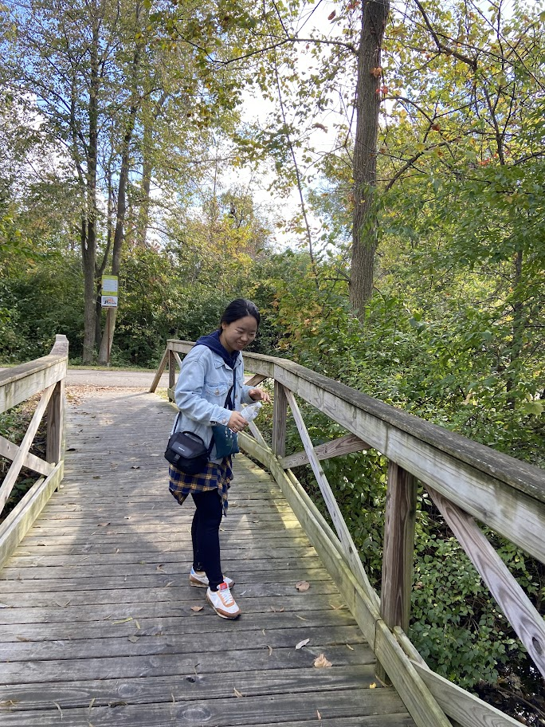
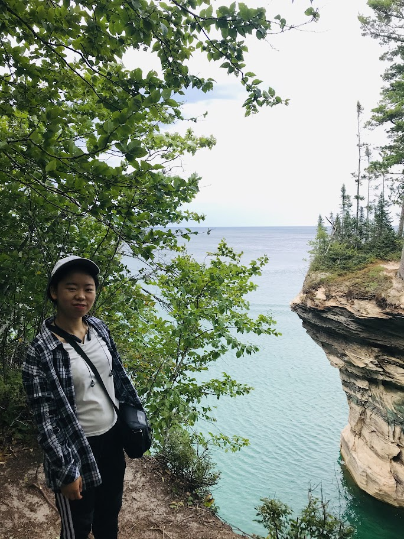
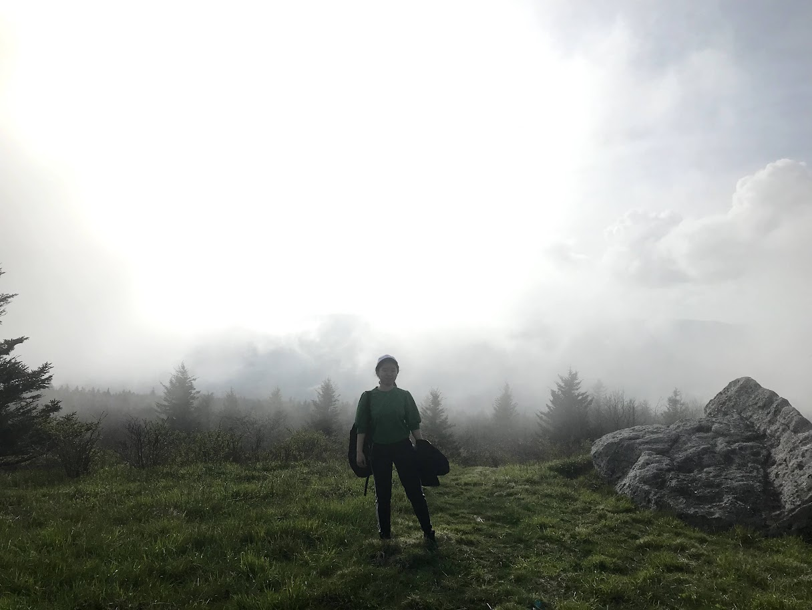
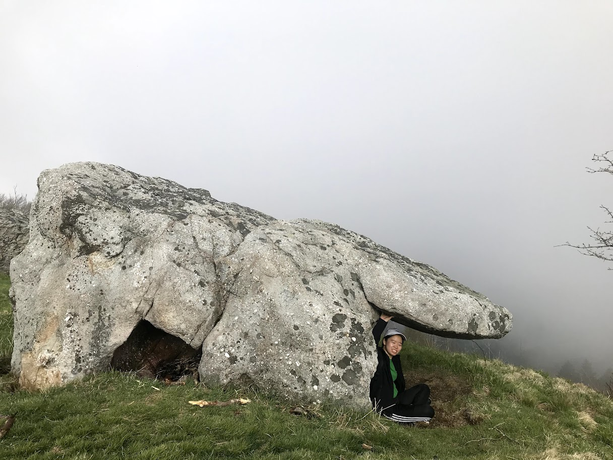

“If you are seeking creative ideas, go out walking.” – Raymond Inmon
“The world reveals itself to those who travel on foot.” – Werner Herzog
“Hiking is a bit like life: The journey only requires you to put one foot in front of the other…again and again and again. And if you allow yourself the opportunity to be present throughout the entirety of the trek, you will witness beauty every step of the way, not just at the summit” –Unknown




